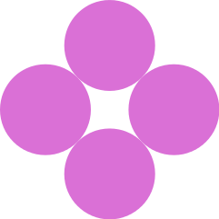
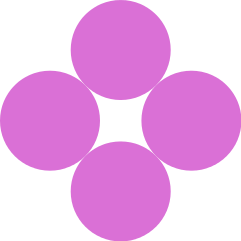

Building Pictures with Racket
Building Pictures with Racket
By Rowan Weir, Daniel Barnas, Allan Schougaard
Introduction
So far, we have focused on building images with pre-existing functions from the 2htdf/image and picturing-programs libraries. We are going to utilize what we have covered previously in this chapter, so review the chapter on graphics first (here). In this chapter, we are going to define functions that accept images as an inputs or return images as their outputs.
The Design Recipe
Designing functions can be complicated, but the process is simplified using a 'design recipe'.
A design recipe is a step-by-step process that precisely dictates how to build or define functions.
We will be going over each step of the recipe in detail in this chapter.
It is possible to cobble together a function from bits and pieces of code, approaching the problem arbitrarily and forcing the function to work via brute force.
Although this haphazard approach to programming may succeed on smaller, less sophisticated functions, functions with this programming "philosophy" at their core are ultimately more difficult to execute.
In the world of software development, projects often require the coordinated cooperation of many people.
For this reason, it is important to clarify exactly what a program will be expected to do, and what the inputs are, and what the expected output will be.
Therefore a systematic recipe for writing functions is incredibly valuable.
The design recipe also allows for a divide-and-conquer approach, breaking large problems into smaller ones.
It also requires you to more completely understand and express different aspects of your function.
Purpose
The first step of writing any function is to clarify and express exactly what you intend to the function to do.
That is the concept behind the purpose statement.
At first, you will probably want to jump in and begin coding right away.
What you may find later on, however, is that you don't fully understand the specifics of what your function is supposed to do, or what components ou may need to complete it.
The simple step of stating the purpose forces us to confront our understanding of the task at hand.
You may also find that putting the problem you're trying to solve into words automatically deepens your understanding of the problem.
A good purpose statement succinctly explains what the function will accept as inputs, what it will do, and what it will output, if anything.
Let's try writing some good purpose statements.
For simplicity, in these first examples we are going to use numbers.
Later, we will explore how the same process can apply to graphics.
Here is our challenge:
Create a function that squares any number.
A good way to begin writing purpose statements is to follow this basic format:
; Purpose : Given ..., returns ...
What you are given is your input.
What you return is your expected output.
This may seem overly simplified, but knowing these two components of your function from the very beginning can really help you a great deal later on.
For the purpose statement of this function, we could write the following:
; Purpose : Given any number, returns that number raised to the second power.
Keep in mind that a purpose statement should be fairly short, around 1-2 lines of comments.
If you find yourself needing more than that, it may be a sign that the function you're trying to write could be broken up into smaller functions.
If you cannot clearly and succinctly come up with a purpose statement that fits on at most two line, then it is likely one of two things is true.
Either your understanding of the function is lacking, or the function you are trying to write can be broken down into a few functions of lesser complexity.
overlay or rotate ?
Signature
After you have clarified the the purpose of your function, you need to specify the signature.
A signature is like your toolbox.
It clearly states what datatypes our program will be utilizing.
The signature can also serve as a set of instructions for constructing parts of our function.
When writing your signature, ask: what are we working with?
What data am I starting with, and where do I want to end up?
Let's proceed with our example to get a better idea of what a signature should look like.
; Signature : number -> number
Our function accepts a number, and is expected to produce a number as well.
Specifying the signature of a pre-existing function can be a way to better understand what that function does.
For example, the signature of the place-image would be:
; Signature : image number number image -> image
ellipse or radial-star ?
Examples
Testing is a vital component of the function design process.
Creating effective examples of your function allows you to determine whether it is working as anticipated.
It is important to write examples prior to coding your function, because you will continually test your program as you add more to the code.
The function is most commonly used to create tests is check-expect.
The check-expect function recieves the name of your function and test arguments for each datatype you specified in your signature.
It also includes the result you expect from your function, given the inputs provided.
If we were to write the signature for the check-expect function, it might be:
; Signature : your-function datatype(s) expected-result -> boolean
Remember, the number of inputs and the datatypes of the inputs and output should match the signature you wrote for your function.
Let’s see how this applies to our squared function.
; Tests/Examples
(check-expect (squared 3) 9)
The first argument is the squared function that we are testing and our test input 3.
The last argument is the expected output given the input, in this case 9.
Now, this test alone does not cover all scenarios our function needs to handle.
We need to create additional test cases for all the conditions we expect our function to encounter.
; Tests/Examples
(check-expect (squared 3) 9)
(check-expect (squared 0) 0)
(check-expect (squared -4) 16)
Sometimes when coding a function you may find that the examples you created don't fully
This will ensure that all parts of our function works.
As mentioned earlier, check-expect is the function most commonly used to test examples, but there are others.
It is sufficient for the needs of this chapter, and for most functions that will output images.
If you’d like to learn more about other test functions, be sure to check out the documentation regarding check-within, check-random, and check-satisfied.
Stub
With our test functions written and our desired outputs specified, it’s time for the stub.
The stub is like an extremely abbreviated version of what will eventually be our complete function.
Consider it a first draft, whose chief purpose is to get our test functions to execute.
Most of the stub is written like a full function definition.
Begin with the name of the function you’re working on as well as any parameters representing the inputs that the function will take.
Remember, these should match the inputs noted in the signature up above.
If we can get the test functions to run, even if they fail, we’re still closer to our goal than if the test functions failed to run at all.
For this reason, we will simply include some bogus value instead of a full function body, preferably of the same data type as the function’s expected output.
We want to enter a bogus value to eliminate the chance that our tests will pass.
Let’s see what a stub would look like for our example:
; Stub
(define (squared num) -1)
We know the value -1 will never be an actual result, since a squared number will never be negative.
Run the stub.
What happens? Is the result what we anticipated?
Stop Sign
Stop signs are ubiquitous, and generally share the same distinctive design regardless of the country they appear in.
A red octogon accompanied by white text is the international standard.
Many countries use the English word "STOP" on their signs, with others electing to use their local language instead.
In this example, we want to write a function that produces a stop sign.
This function will take a text input, and output the image of a stop sign with the text displayed in white letters.
Lets follow the design recipe
Recall that for the purpose, we want to briefly explain what our function will return, and which inputs it will require.
; Purpose: Return an image of a "stop" sign, given the text input by the user
Example 1 (Stop Sign)
From the problem statement here (insert link), we can go ahead and name our
function.
When naming a function, we want to make sure the name conveys the general purpose behind our function.
But you also need to make sure the name is not exceedingly long.
For this example, let's go ahead and name it stop_sign_text.
; Signature
stop_sign_text:
The general idea behind our function is pretty simple.
When given a string of text, the function should output a stop sign with that text on it.
We can convey this in the signature as follows:
; Signature
stop_sign_text: text -> image
Given the signature, any other programmer would have a clear set of instructions of how to use our function and what output type(s) to expect.
The signature also gives us a structure to fall back on if we find ourselves lost while writing the function.
Whenever writing a function that outputs an image, it is a good idea to first do the work of creating the desired image using the graphics functions that we have in our toolkit.
Doing this serves two purposes.
First, it gives you a finished example that you can then test your function against.
And second, working through putting together the desired image will usually help you frame the function that are about to write.
As you should be familiar with creating graphics in Dr.Racket, we leave it as
an exercise to create an image of a stop sign with the word "STOP" written in
all capital letters.
As we want to test stop signs in other languages as well,
go ahead and create another stop sign with the word "ALTO" in all upper case
letters.
We've gone ahead and created our own copies. You can see the code we used here (link).
The next step in the recipe is fairly straightforward, but offers the benefit
of making sure we don't trip over ourselves before we even begin coding.
The idea
behind the stub is to take advantage of the fact that since we've already written
calls to our function in the test cases above.
If we can get the test cases to run without throwing a compiler error, then we know that we're calling our function
correctly and we're inputting exactly what's expected.
A stub is therefore a
function header for our function that purposely returns an incorrect value.
The reason we want it to return an incorrect value is because we don't want our test
cases to pass without us having even written any code yet!
To write a stub for our function, let's begin by calling the define keyword used to
define functions, followed by an open parenthesis and the name of our function.
(define (stop-sign-text
We will need to create a function parameter that will take the text that the user
wants to input. It's a good habit to make parameter names concise, but descriptive.
In this case, let's go with stop-txt.
In DrRacket, we will usually use the check-expect function to test our functions.
First, call check-expect like you would any other function (preceded by an open
parenthesis). The first argument is then a call to the function you are about to write
and a test argument. Our function will take a text string input, so for our first
argument, let's enter the string "STOP". Our function will only take one argument
so we can close the function call with a closing parenthesis. The last argument that
check-expect takes is the expected result of the function call. In this case,
we can either copy and paste the image that we expect stop-sign-text to output,
or we can copy and paste the code we used to create the image. These are ultimately
equivalent so the choice is up to you.
(check-expect (stop-sign-text "STOP") image)
Usually, the more test cases we provide, the better. Since we've already gone through
the work of creating a Mexican stop sign, let's go ahead and create a test that
outputs that image as well.
(check-expect (stop-sign-text "ALTO") image)
Given the test cases above, we've basically narrowed down what results will
qualify our function as acceptable, or not acceptable. When writing functions
that contain conditional statements (if, cond, etc.), it is necessary to create
test cases that cover all possible options. For this function, our test-cases should
be enough.
; Purpose : given two colors and a string of text, return a stop sign
; Signature : string (color) string (color) string -> image
; Examples :
; Stub :
(define (stop-sign clr clr str) 0)
; Template :
(define (stop-sign clr1 clr2 str)
(overlay
(text ... ... ...)
(regular-polygon ... ... ... ...)
)
)
; Code :
(define (stop-sign clr1 clr2 str)
(overlay
(text str 75 clr1)
(regular-polygon 100 8 "solid" clr2)
)
)
Counter-Change
; Purpose : given two images, return a checkerboard of those images
; Signature : image image -> image
; Examples :
; Stub :
(define (counter-change img1 img2) 0)
; Template :
(define (counter-change img1 img2)
(above
(beside ... ...)
(beside ... ...)
)
)
; Code :
(define (counter-change img1 img2)
(above
(beside img2 (flip-horizontal img1))
(beside img1 (flip-horizontal img2))
)
)


Bulls-Eye
; Purpose : given two colors, return a bulls-eye comprised of those colors
; Signature : string (color) string (color) -> image
; Examples :
; Stub :
(define (bulls-eye clr clr) 0)
; Template :
(define (bulls-eye clr1 clr2)
(overlay
(circle ... ...)
(circle ... ...)
)
)
; Code :
(define (bulls-eye clr1 clr2)
(overlay
(circle 10 "solid" clr1)
(circle 20 "solid" clr2)
(circle 30 "solid" clr1)
(circle 40 "solid" clr2)
(circle 50 "solid" clr1)
(circle 60 "solid" clr2)
(circle 70 "solid" clr1)
(circle 80 "solid" clr2)
(circle 90 "solid" clr1)
(circle 100 "solid" clr2)
)
)


Pinwheel
; Purpose : given a shape or image, return a 'pinwheel' comprised of that shape
; Signature : image -> image
; Examples :
; Stub :
(define (pinwheel img) 0)
; Template :
(define (pinwheel img)
(rotate ...
(above
(beside
(rotate ... ...)
(rotate ... ...)
)
(beside
(rotate ... ...)
(rotate ... ...)
)
)
)
)
; Code :
(define (pinwheel img)
(rotate -45
(above
(beside
(rotate 45 img)
(rotate -45 img)
)
(beside
(rotate -45 img)
(rotate 45 img)
)
)
)
)
 


Business Card
; Purpose : given a name, a job, an identifying image, and a logo, return a business card.
; Signature : image image text text -> image
; Examples :
; Stub :
(define (business-card id logo name job) 0)
; Template :
(define (business-card id logo name job)
(overlay/align/offset ... ...
(beside ...
(above
(text ... ... ...)
(text ... ... ...)
)
)
... ...
)
)
; Code :
(define (business-card id logo name job)
(overlay/align/offset "right" "top"
logo
5 -10
(overlay/offset
(beside
(place-image
id
115 100
(rectangle 175 225 "solid" "white")
)
(above
(text name 36 "black")
(text/font job 24 "dimgray" #f 'roman 'italic 'normal #f)
)
)
40 0
(rectangle 500 250 "solid" "whitesmoke")
)
)
)


Clock Face
...